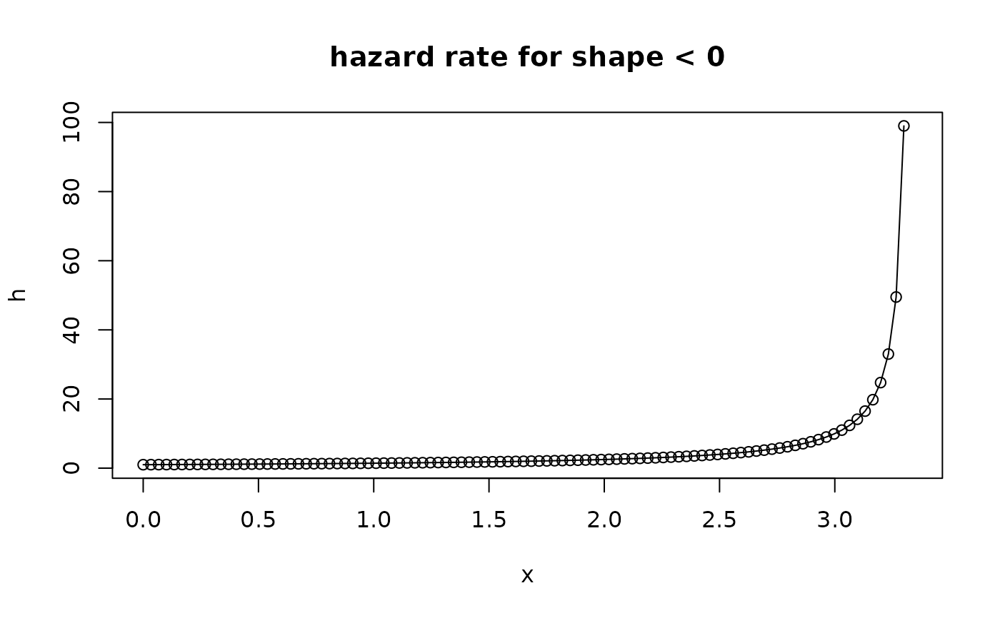
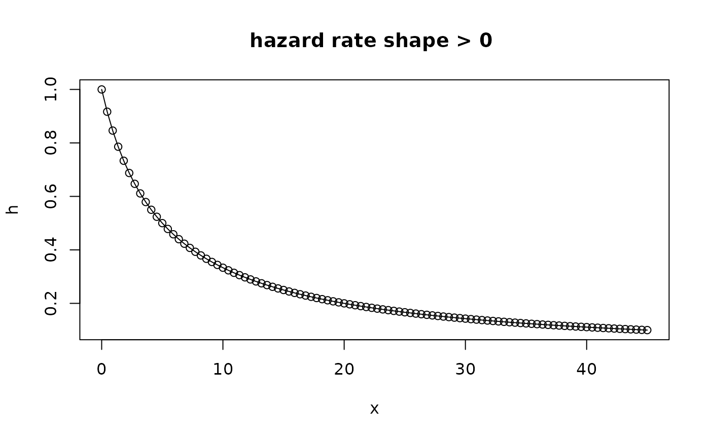

Generalised Pareto Distribution
GPD.RdDensity function, distribution function, quantile function, random generation, hazard and cumulative hazard functions for the Generalised Pareto Distribution.
Usage
dGPD(x, loc = 0.0, scale = 1.0, shape = 0.0, log = FALSE)
pGPD(q, loc = 0.0, scale = 1.0, shape = 0.0, lower.tail = TRUE)
qGPD(p, loc = 0.0, scale = 1.0, shape = 0.0, lower.tail = TRUE)
rGPD(n, loc = 0.0, scale = 1.0, shape = 0.0)
hGPD(x, loc = 0.0, scale = 1.0, shape = 0.0)
HGPD(x, loc = 0.0, scale = 1.0, shape = 0.0)Arguments
- x, q
-
Vector of quantiles.
- p
-
Vector of probabilities.
- n
-
Number of observations.
- loc
-
Location parameter \(\mu\).
- scale
-
Scale parameter \(\sigma\).
- shape
-
Shape parameter \(\xi\).
- log
-
Logical; if
TRUE, the log density is returned. - lower.tail
-
Logical; if
TRUE(default), probabilities are \(\textrm{Pr}[X <= x]\), otherwise, \(\textrm{Pr}[X > x]\).
Details
Let \(\mu\), \(\sigma\) and \(\xi\) denote loc,
scale and shape. The distribution values \(y\)
are \(\mu \leq y < y_{\textrm{max}}\).
When \(\xi \neq 0\), the survival function value for \(y \geq \mu\) is given by
$$S(y) = \left[1 + \xi(y - \mu)/\sigma\right]^{-1/ \xi} \qquad \mu < y < y_{\textrm{max}}$$ where the upper end-point is \(y_{\textrm{max}} = \infty\) for \(\xi >0\) and \(y_{\textrm{max}} = \mu -\sigma/ \xi\) for \(\xi <0\).
When \(\xi = 0\), the distribution is exponential with survival $$S(y) = \exp\left[- (y - \mu)/\sigma\right] \qquad \mu \leq y. $$
Value
dGPD gives the density function, pGPD gives the
distribution function, qGPD gives the quantile function, and
rGPD generates random deviates. The functions
hGPD and HGPD return the hazard rate and the cumulative
hazard.
Note
The functions are slight adaptations of the [r,d,p,q]gpd
functions in the evd package. The main difference is that
these functions return NaN when shape is negative, as
it might be needed in unconstrained optimisation. The quantile function
can be used with p=0 and p=1, then returning the lower and
upper end-point.
See also
fGPD to fit such a distribution by Maximum Likelihood.
Examples
qGPD(p = c(0, 1), shape = -0.2)
#> [1] 0 5
shape <- -0.3
xlim <- qGPD(p = c(0, 1), shape = shape)
x <- seq(from = xlim[1], to = xlim[2], length.out = 100)
h <- hGPD(x, shape = shape)
plot(x, h, type = "o", main = "hazard rate for shape < 0")

shape <- 0.2
xlim <- qGPD(p = c(0, 1 - 1e-5), shape = shape)
x <- seq(from = xlim[1], to = xlim[2], length.out = 100)
h <- hGPD(x, shape = shape)
plot(x, h, type = "o", main = "hazard rate shape > 0 ")
